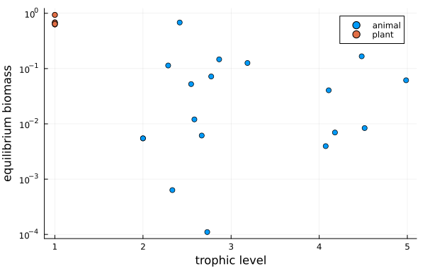
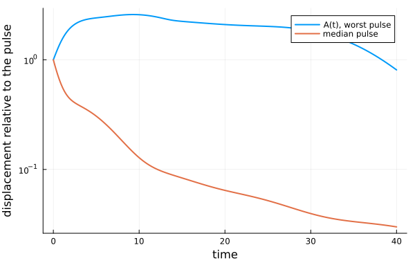
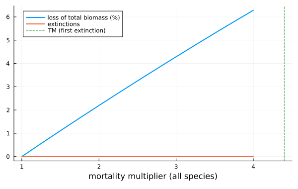

One food web and its 27 stability metrics
Simon Frost
- Overview
- A niche-model web
- Assembly
- Responses to small pulses, from the Jacobian
- Responses to presses and extinctions, by simulation
Overview
The authors’ simulation code is not public, so this package rebuilds it from SI §8–9 of Domínguez-García et al. (2019). The published dataset is used to settle what the text leaves open or gets wrong (see the project wiki: Simulator reconstruction and Calibration). This vignette follows one community through the whole procedure:
- draw a niche-model web;
- run the bioenergetic model to a steady state;
- compute the 27 metrics, from the Jacobian and from simulated presses and extinctions.
using DominguezGarcia2019
using FoodWebDynamics
using DataFrames, Statistics, Random, Printf
using PlotsA niche-model web
The niche model of Williams & Martinez (2000) places species on a niche axis and lets each eat the species within a range below it. The connectance is 0.15, as in the paper.
rng = Xoshiro(42)
web = niche_model(rng, 30, 0.15)
L = trophic_levels(web)
(species = richness(web), connectance = round(connectance(web); digits = 3), basal = count(isbasal(web)),
max_trophic_level = L === nothing ? missing : round(maximum(L); digits = 2))(species = 30, connectance = 0.154, basal = 4, max_trophic_level = missing)Assembly
assemble_community draws a web and the community’s allometric exponents, starts from random biomasses and integrates to a steady state. Species are removed when they fall below 10⁻⁶ of their body mass. The web is discarded if more than 10% of its species die, and plants left without consumers are then removed. Most draws are discarded. The status records why.
attempts = Symbol[]
c = nothing
while c === nothing
global c, status = assemble_community(rng, 30)
push!(attempts, status)
end
(attempts = attempts, initial = c.initial_richness, final = richness(c))(attempts = [:ok], initial = 30, final = 27)B = biomass(c)
alive = findall(c.model.alive)
scatter(c.model.trophic_level[alive], B; yscale = :log10, group = ifelse.(c.model.basal[alive], "plant", "animal"),
xlabel = "trophic level", ylabel = "equilibrium biomass", size = (600, 380))
Without the metabolic loss that SI §8 lists for them, plants sit close to their carrying capacity of 1. Only this choice reproduces the dataset’s total biomass per plant (0.98).
Responses to small pulses, from the Jacobian
The Jacobian at equilibrium gives resilience (the slowest return rate) and reactivity (the fastest initial amplification). The amplification envelope A(t) = ‖exp(Jt)‖ is the largest displacement at time t of any unit pulse. The “median” versions average over pulses proportional to equilibrium biomass (Arnoldi et al. 2018).
op = community_jacobian(c)
C = pulse_covariance(B)
ts = 0:0.1:40
plot(ts, [amplification_envelope(op, t) for t in ts]; label = "A(t), worst pulse", lw = 2, yscale = :log10,
xlabel = "time", ylabel = "displacement relative to the pulse", size = (600, 380))
plot!(ts, [median_displacement(op, C, t) for t in ts]; label = "median pulse", lw = 2)
Amax, tmax = max_amplification(op)
(resilience = resilience(op), reactivity = reactivity(op), Amax = Amax, tmax = tmax,
median_reactivity = median_reactivity(op, C), stochastic_invariability = stochastic_invariability(op),
sensitivity = press_sensitivity(op))(resilience = 0.027373151276825505, reactivity = 0.4707792320817974, Amax = 2.5862447957697587, tmax = 9.3, median_reactivity = -0.6753929845020011, stochastic_invariability = 0.004499060622894939, sensitivity = 340.9024950559039)The equilibrium is reactive: some pulses grow by a factor of Amax before they decay. A pulse spread over species in proportion to their biomass decays from the start.
Responses to presses and extinctions, by simulation
Tolerance to mortality is the smallest increase in mortality that causes an extinction. It is measured for all species at once (global) and for each species alone (local). Raising every species’ mortality by 10% and removing species one at a time give the resistance and sensitivity metrics.
factors = 1.0:0.25:4
resp = [press_response(c, fill(f, length(state(c)))) for f in factors] # every species' mortality × f
plot(factors, [100 * r[1] for r in resp]; lw = 2, label = "loss of total biomass (%)",
xlabel = "mortality multiplier (all species)", size = (600, 380))
plot!(factors, [r[3] for r in resp]; lw = 2, label = "extinctions", seriestype = :steppost)
vline!([global_mortality_tolerance(c)]; label = "TM (first extinction)", ls = :dash)
community_record runs every experiment and returns the 39 raw columns of the authors’ Dataset S1. prepare_metrics then turns them into the 27 metrics, each signed so that larger means more stable.
rec = community_record(rng, c)
m = prepare_metrics(DataFrame([rec]))
DataFrame(metric = METRICS, value = [m[1, k] for k in METRICS])<div><div style = "float: left;">27×2 DataFrame</div><div style = "float: right; font-style: italic;">2 rows omitted</div><div style = "clear: both;"></div></div><div class = "data-frame" style = "overflow-x: scroll;">
| Row | metric | value |
|---|---|---|
| String | Float64 | |
| 1 | R0 | -0.470779 |
| 2 | Is | 0.00449906 |
| 3 | Amax | -5.57401 |
| 4 | tmax | -6.8 |
| 5 | Rinf | 0.0273732 |
| 6 | MR0 | 0.675282 |
| 7 | MAmax | -1.0 |
| 8 | Mtmax | -0.0 |
| 9 | MRinf | 0.0368317 |
| 10 | S | -340.902 |
| 11 | \<s_ij\> | -1.64206 |
| 12 | TM | 4.401 |
| 13 | \<TM\> | 24.6333 |
| ⋮ | ⋮ | ⋮ |
| 16 | TE | 0.403704 |
| 17 | maxCE | -7.26923 |
| 18 | RM | -0.00224119 |
| 19 | \<RM\> | -8.32026e-5 |
| 20 | maxRM | -0.00079769 |
| 21 | SM | -0.0062326 |
| 22 | \<SM\> | -0.000675949 |
| 23 | maxSM | -0.00488788 |
| 24 | \<RE\> | -0.0403705 |
| 25 | maxRE | -0.157127 |
| 26 | \<SE\> | -0.102798 |
| 27 | maxSE | -0.459017 |